TC-projektin aikana työskentelin useissa eri tehtävissä, jotka kattoivat suunnittelun,
kehityksen ja testauksen.
🖌️
Figma Suunnittelu
Vastaa UI/UX suunnittelusta, prototyyppien luomisesta ja resurssien valmistelusta
frontend-toteutusta varten
🎨
Frontend Kehittäjä
Rakensin käyttöliittymän Figma-suunnittelun pohjalta ja toteutin keskeiset näkymät ja käyttäjävuorovaikutukset
🗄️
Tietokanta Suunnittelu
Suunnitteli tietokannan rakenteen, suhteet ja tietovirran tukemaan sovelluksen toiminnallisuutta
🧪
Testaaja
Testasin ydinominaisuuksia, tunnistin virheitä ja varmistin, että sovellus toimii käyttäjän näkökulmasta
odotetulla tavalla.
🖌️
Figma Suunnittelu
Lyhyt esittely: Vastasin REKO-sovelluksen käyttöliittymäsuunnittelusta Figmassa. Tavoitteena
oli luoda selkeä
ja helppokäyttöinen näkymä, jossa kaikki käyttäjät voivat selata ja hakea tuotteita etusivulla tuoteryhmittäin
ilman kirjautumista. Tuottajille suunnittelin kirjautumisen ja tuotteiden
hallinnan näkymät.
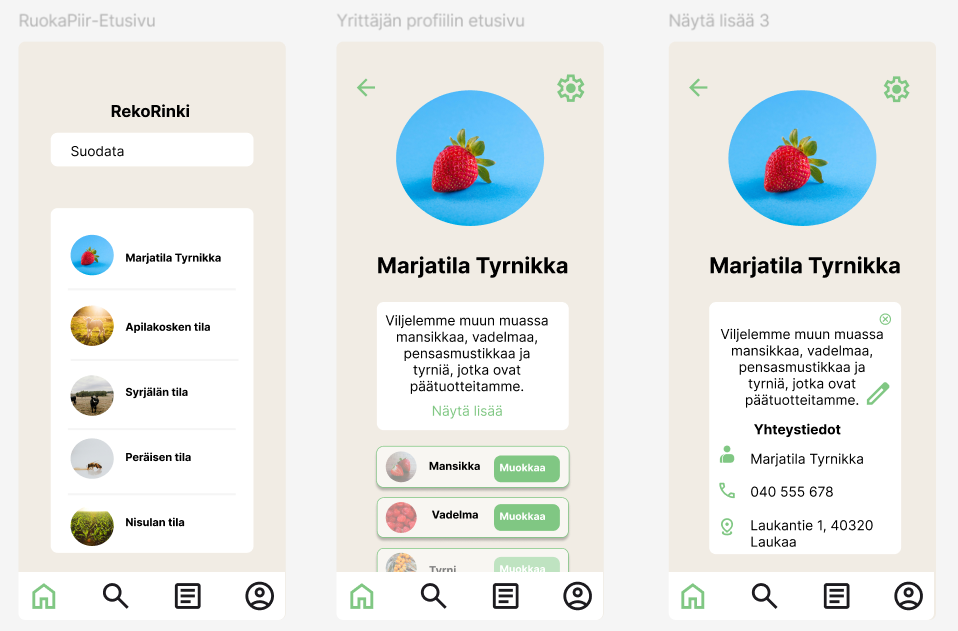
Vanha versio→
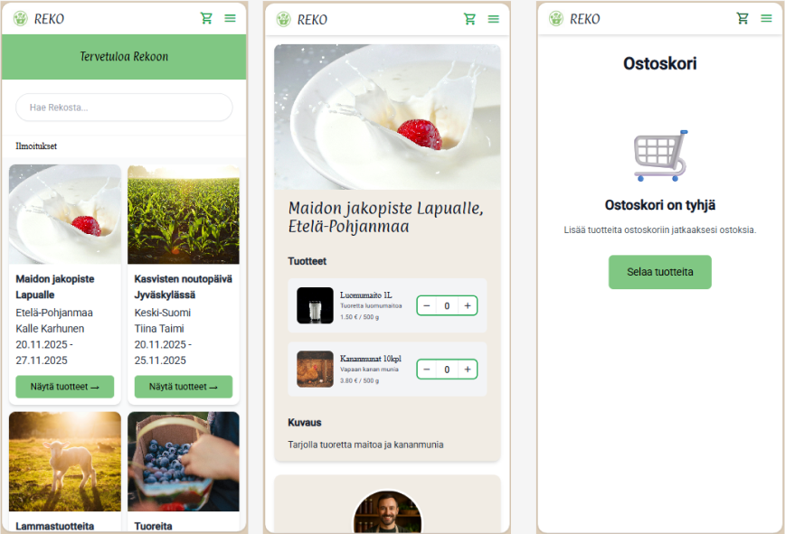
Uusi versio
Miten tein käytännössä: Suunnittelin käyttöliittymän näkymiä ja käyttäjäpolkuja Figmassa
vaiheittain.
Aloitin yksinkertaisella rakenteella, jonka pohjalta kehitimme toiminnallisemman
ja visuaalisesti viimeistellyn version. Suunnittelussa huomioin koko ajan myös
frontend-toteutuksen vaatimukset, kuten komponenttirakenteen ja uudelleenkäytettävyyden.
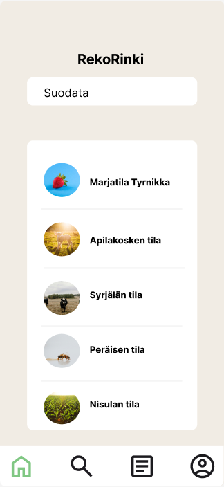
Vanha Etusivu→
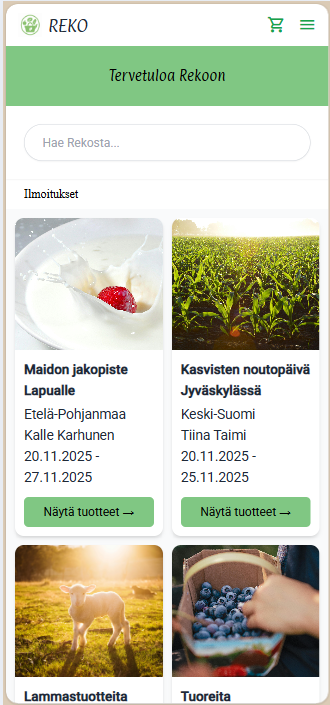
Uusi Etusivu
Visuaalinen ajattelu: Vanhassa versiossa painopiste oli toiminnallisuuksissa ja sisällön
määrässä.
Uudessa versiossa paransin kontrasteja, typografiaa ja elementtien välistä
rytmiä, jotta tärkeät toiminnot erottuvat paremmin ja käyttöliittymä tuntuu
selkeämmältä ja rauhallisemmalta.
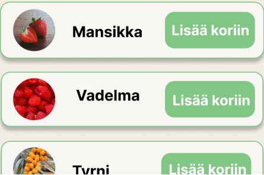
Vanhat nappit→
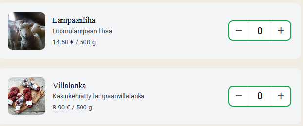
Uudet nappit
Yhteistyö ja iterointi:
Käyttöliittymäsuunnittelu tehtiin tiiviissä yhteistyössä tiimin kanssa, eikä lopullinen ratkaisu syntynyt
heti. Projektin alkuvaiheessa vastasin koko REKO-sovelluksen desktop-version käyttöliittymäsuunnittelusta
Figmassa, ja tämä versio toimi pohjana sovelluksen rakenteelle ja visuaaliselle ilmeelle. Suunnitelmaa
kehitettiin projektin edetessä palautteen, keskustelujen ja käytännön testaamisen perusteella.
Iterointia tehtiin useaan otteeseen, esimerkiksi etusivun rakenteen, painikkeiden, värien ja typografian
osalta, jotta käyttöliittymä olisi mahdollisimman selkeä ja helppokäyttöinen eri käyttäjäryhmille. Projektin
myöhemmässä vaiheessa keskityin enemmän muihin rooleihin, kuten frontend-toteutukseen, mutta
Figma-suunnitelma säilyi tärkeänä viitepisteenä koko kehityksen ajan ja ohjasi käyttöliittymän toteutusta
loppuun asti.
Ostoskori Figma→Ostoskori frontend
Mitä opin:
Opin, että projektin alussa kannattaa tehdä yksinkertainen versio ja kehittää sitä vähitellen
eteenpäin
Opin myös käyttämään komponentteja ja ryhmittelyä Figmassa, ja huomasin, että ilman niitä
suunnittelussa eteneminen on todella hankalaa
Lisäksi opin, miten prototyyppi toimii Figmassa, kuten kuvakkeiden klikkaaminen ja siirtymät eri
välilehtien välillä
Opin myös hyödyntämään kontrasteja, esimerkiksi värien sävyjä ja erottuvuutta, jotta käyttöliittymästä
tulee selkeämpi ja saavutettavampi
Ymmärsin samalla paremmin, miten suunnittelu tukee sujuvaa frontend‑kehitystä.
Vanha logo→Uusi logo
Mitä tekisin nyt toisin: Alussa olisin voinut käyttää enemmän komponentteja ja
ryhmittelyä suunnittelussa. Olisin myös voinut oppia enemmän Figman ominaisuuksista, kuten prototyypeistä.
Lisäksi dokumentoisin suunnitteluratkaisut tarkemmin kehittäjiä varten, jotta toteutusvaihe olisi vielä
sujuvampi.
🎨
Frontend Kehittäjä
Lyhyt esittely: Vastasin REKO-sovelluksen frontend-toteutuksesta Angular-frameworkilla.
Tavoitteena oli toteuttaa Figma-suunnitelmat toimivaksi ja responsiiviseksi käyttöliittymäksi sekä rakentaa
selkeä komponenttipohjainen rakenne.
Desktop versio→
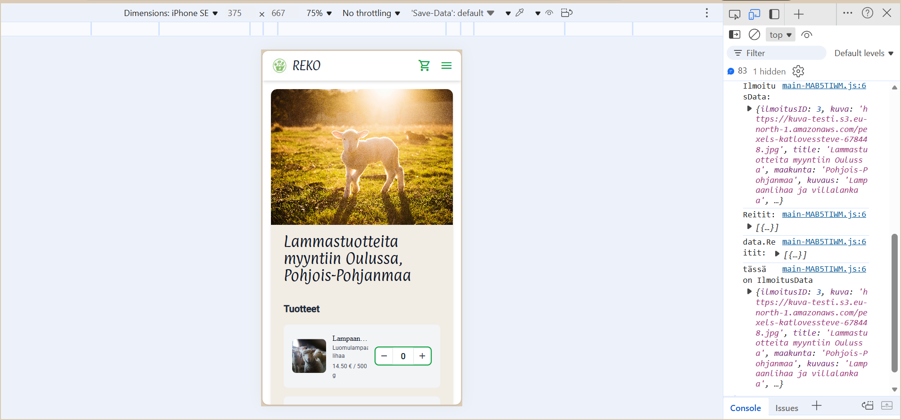
Mobiili versio
Miten tein käytännössä:Toteutin käyttöliittymän Angularilla Figma-suunnitelmien pohjalta.
Rakensin näkymät komponenteista ja hyödynsin palveluita (services) datan käsittelyyn ja sovelluksen
logiikkaan. Alkuvaiheessa data oli kovakoodattua, jotta käyttöliittymän rakenne ja toiminnallisuudet
saatiin nopeasti testattua. Projektin loppuvaiheessa frontend yhdistettiin backendin REST APIin, jolloin
data haettiin pilvessä toimivasta tietokannasta.
Frontend-kehitykseen kuului käyttäjäinteraktioiden käsittely, reititys eri näkymien välillä sekä lomakkeiden
ja ostoskorin toiminnallisuuksien toteutus.
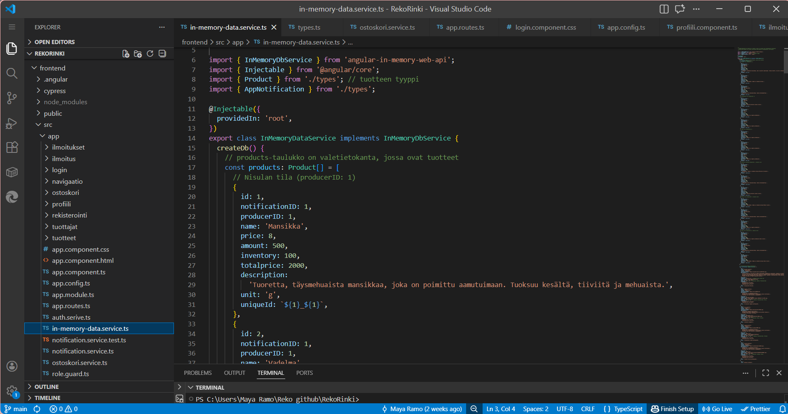
Kovakoodattua data→
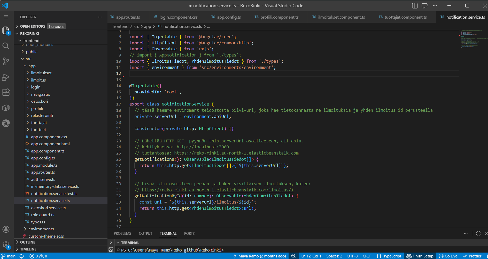
Data backendistä
Visuaalinen ajattelu: Kiinnitin huomiota siihen, että käyttöliittymä on selkeä ja
helppokäyttöinen eri laitteilla. Toteutin responsiivisen rakenteen ja varmistin, että tärkeät toiminnot ovat
helposti löydettävissä. Pyrin myös siihen, että käyttöliittymä vastaa mahdollisimman tarkasti
Figma-suunnitelmia ja tarjoaa sujuvan käyttäjäkokemuksen.
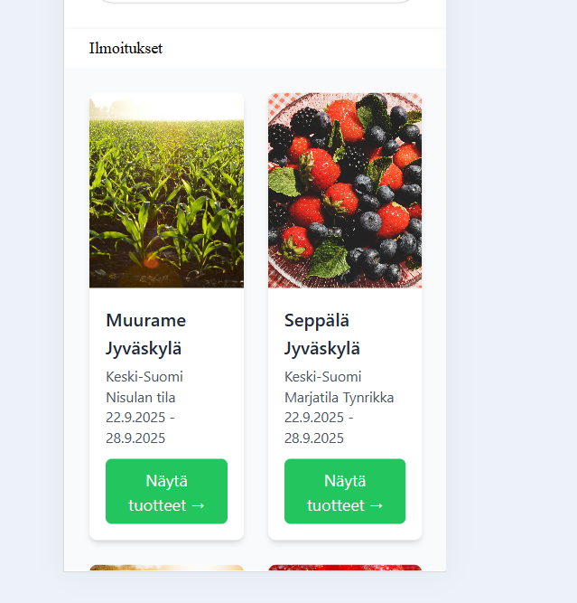
Vanhat kontrasti→
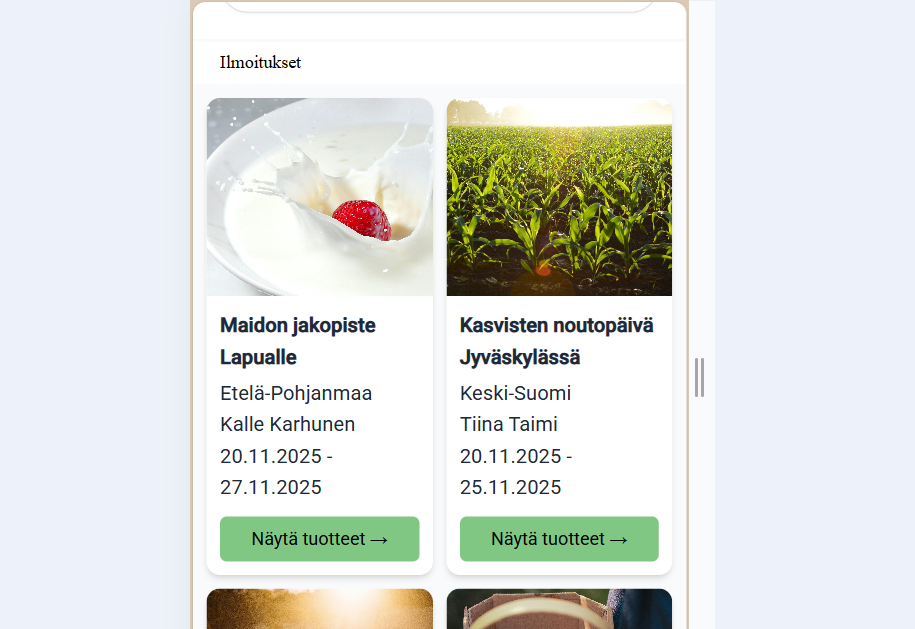
Parempi kontrasti
Tilanhallinta ja tekniset ratkaisut:Projektin alkuvaiheessa kokeilin tilanhallintaan
SignalStorea, koska sovelluksen idea oli laaja ja sisälsi useita toiminnallisuuksia. SignalStore toimii
hyvin monimutkaisemmissa sovelluksissa, joissa tarvitaan selkeää ja keskitettyä tilanhallintaa. Projektin
edetessä kuitenkin huomasimme, että sovellus ei lopulta kasvanut niin laajaksi kuin alun perin oli
suunniteltu.
Tämän vuoksi päätimme luopua SignalStoren käytöstä ja siirtyä yksinkertaisempaan ratkaisuun, jossa
ostoskorin tiedot tallennetaan localStorageen. Tämä teki toteutuksesta selkeämmän, helpommin ymmärrettävän
ja nopeamman ylläpitää. Ratkaisu vastasi paremmin sovelluksen todellisia tarpeita ja tuki hyvin projektin
aikataulua ja tavoitteita.
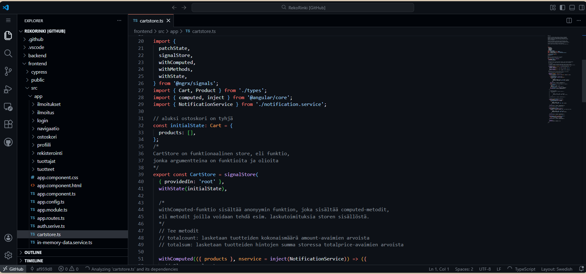
SignalStore→
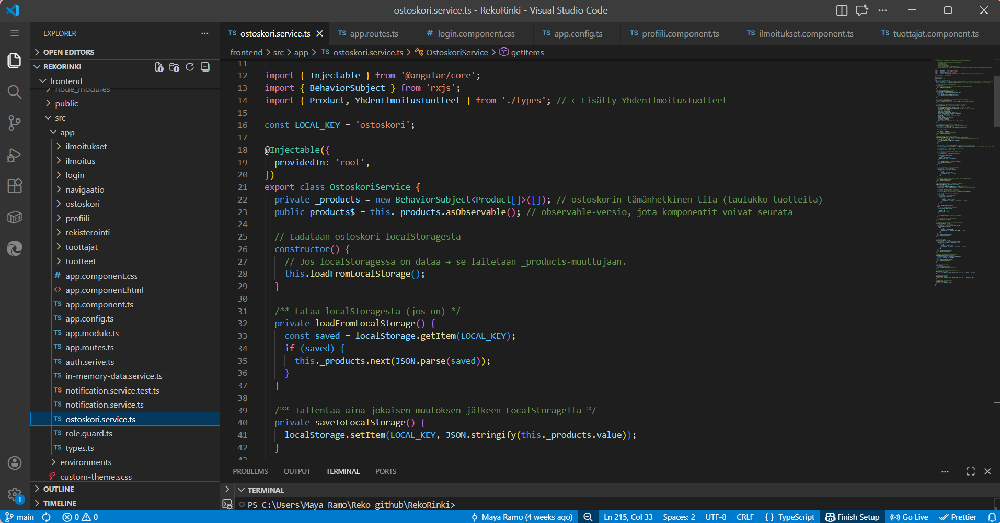
LocalStorage
Mitä opin:
Opin projektin aikana arvioimaan paremmin, millainen tilanhallintaratkaisu sopii oikeasti projektin
laajuuteen.
Ymmärsin, että vaikka SignalStore on tehokas työkalu laajoihin ja monimutkaisiin sovelluksiin,
yksinkertaisempi ratkaisu voi olla parempi rajatummissa kokonaisuuksissa.
Opin tekemään teknisiä päätöksiä projektin edetessä ja muuttamaan alkuperäisiä ratkaisuja tarpeen
mukaan.
Käytännön työssä opin lisää Angularin komponenttirakenteesta ja siitä, miten palveluita hyödynnetään
frontendissä.
Opin käyttämään Angularin valmiita komponentteja, kuten lomakkeita ja vahvistusilmoituksia.
Vaikkakin niiden tyylien muokkaaminen Tailwind CSS:llä oli haasteita, opin ratkaisemaan nämä ongelmat ja
saamaan komponentit näyttämään halutunlaisilta.
Opin paremmin, miten frontend ja backend toimivat yhdessä oikeassa sovelluksessa.
Kehitin myös Tailwind CSS -taitojani, erityisesti responsiivisen suunnittelun osalta pienillä
näytöillä. Pienten ruutujen layout-haasteet opettivat minua olemaan tarkka tekstimuotoilussa, jotta
sisältö pysyy tiiviinä ja luettavana kaikilla näytönkooilla.
Kehitin myös kykyä arvioida teknisiä ratkaisuja kriittisesti ja vaihtaa lähestymistapaa, jos
alkuperäinen ratkaisu ei vastannut projektin todellisia tarpeita.
Mitä tekisin nyt toisin: Jos aloittaisin projektin nyt uudelleen, miettisin
tilanhallintaratkaisun tarkemmin jo alkuvaiheessa suhteessa siihen, kuinka laajaksi sovellus on oikeasti
tarkoitus rakentaa. Valitsisin aluksi mahdollisimman yksinkertaisen ratkaisun ja siirtyisin
monimutkaisempaan tilanhallintaan vasta siinä vaiheessa, kun sovelluksen tarpeet sitä aidosti vaatisivat.
Samalla panostaisin enemmän arkkitehtuurin suunnitteluun ja dokumentointiin heti projektin alussa,
erityisesti tilanhallinnan osalta.
🗄️
Tietokanta Suunnittelu
Lyhyt esittely: Vastasin REKO-sovelluksen tietokannan suunnittelusta ja toteutuksesta
MySQL-tietokannalla yhdessä tiimin kanssa. Tietokanta suunniteltiin tukemaan sovelluksen keskeisiä
toiminnallisuuksia, kuten käyttäjiä, tuottajia, tuotteita, ilmoituksia, tilauksia ja jakelureittejä.
Sovelluksen idea oli melko monimutkainen, minkä vuoksi tietokannan rakenteen suunnittelu vei aikaa.
Ennen toimivan ratkaisun löytymistä hyödynsimme datacase-tapausta, jossa hahmottelimme tauluja ja niiden
suhteita Excelissä.
Tavoitteena oli luoda selkeä ja looginen rakenne, joka toimii sujuvasti yhdessä backendin API-ratkaisun kanssa
ja mahdollistaa tiedon käytön frontend-sovelluksessa.
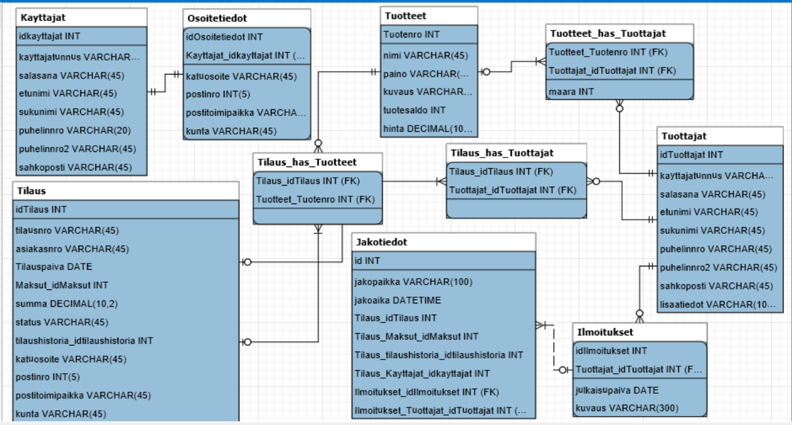
Vanha versio→Uusi versio
Miten tein käytännössä:Osallistuin aktiivisesti tietokannan rakenteen suunnitteluun ja
MySQL-tietokannan toteutukseen yhdessä tiimin kanssa. Suunnittelimme ja rakensimme keskeiset taulut, kuten
Asiakas, Tuottaja, Tuotteet, Ilmoitukset, Tilaus ja Reitit, sekä näiden väliset liitostaulut.
Määrittelin taulujen väliset suhteet vierasavainten avulla ja huolehdin siitä, että tietokanta tukee
sovelluksen käyttötapauksia, kuten tilausten käsittelyä ja tuotteiden liittämistä ilmoituksiin. Rakenteessa
huomioitiin moni–moneen-suhteet, tietojen eheys ja käytännön toimivuus backend-rajapintojen kautta.
Lisäksi määrittelin uniikit kentät, kuten sähköpostit ja käyttäjätunnukset, sekä hyödynsin ENUM-arvoja
esimerkiksi tilausten tilojen hallinnassa.
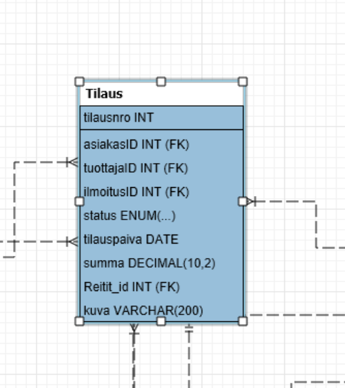
Tilaus taulu→
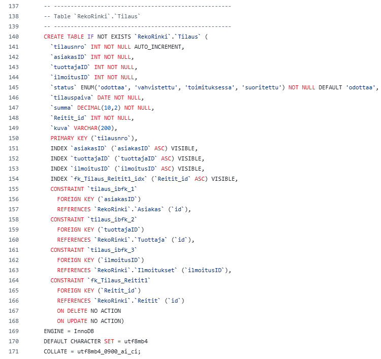
tilaustaulu skriptin osa
Tietokantarakenne ja suhteet: Tietokanta rakennettiin relaatiomallin pohjalta, jossa
keskeiset entiteetit, kuten tuottajat, asiakkaat, tuotteet, ilmoitukset, tilaukset ja jakelureitit, on
selkeästi eroteltu ja yhdistetty loogisilla suhteilla. Tuottajat voivat luoda ilmoituksia ja tuotteita,
asiakkaat tehdä tilauksia, ja tilaukset viittaavat sekä ilmoituksiin että reitteihin viiteavainten avulla.
Yksi suurimmista haasteista oli erottaa tuotteet tilanteessa, jossa eri tuottajilla voi olla samanlaisia
tuotteita. Ratkaisimme tämän käyttämällä Tuotteet-taulussa yhdistettyä pääavainta, jossa TuoteID ja
TuottajaID muodostavat yhdessä primary keyn. Tämän avulla jokainen tuote voidaan yksiselitteisesti liittää
oikeaan tuottajaan.
Monimutkaisempia suhteita mallinnettiin liitostaulujen avulla, kuten tuotteiden kuuluminen ilmoituksiin ja
tilauksiin. Tämä rakenne mahdollisti joustavan tiedonhallinnan ja vastasi sovelluksen monipuolisiin
toiminnallisiin tarpeisiin.
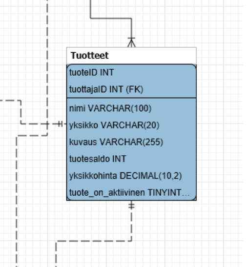
Tuotteet taulu→
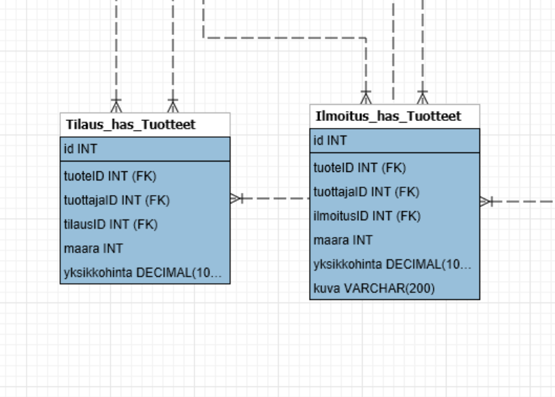
Liitostaulut
Yhteistyö ja iterointi: Tietokannan suunnittelu tehtiin tiiviissä yhteistyössä tiimin
kanssa, eikä toimiva ratkaisu syntynyt heti. Sovelluksen idea oli alusta asti laaja ja monimutkainen, minkä
vuoksi tietokantarakenteen suunnittelu vei paljon aikaa. Ennen lopullisen rakenteen löytymistä
suunnittelimme tietokantaa useaan otteeseen ja hyödynsimme datacase-tapausta, jossa hahmottelimme taulut ja
niiden suhteet ensin Excelissä. Tämän avulla pystyimme testaamaan eri ratkaisuja ja ymmärtämään
kokonaisuutta paremmin ennen MySQL-tietokannan toteutusta. Tietokantakaaviota ja rakennetta muokattiin
projektin aikana useita kertoja, myös vielä viimeisen version jälkeen, jotta tietokanta vastaisi
mahdollisimman hyvin sovelluksen toiminnallisuuksia ja alkuperäistä ideaa.
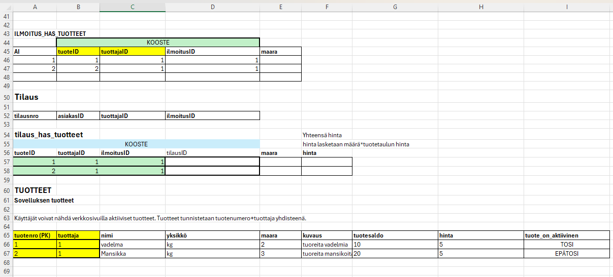
Excel-datacase→Toteuttu versio
Mitä opin:
Opin, kuinka tärkeää on suunnitella tietokanta koko sovelluksen näkökulmasta eikä vain yksittäisten
toiminnallisuuksien perusteella.
Ymmärsin, että monimutkaisissa projekteissa tietokantarakenne harvoin on valmis ensimmäisellä
kerralla, vaan se kehittyy ja tarkentuu yhteistyön, testauksen ja käytännön toteutuksen kautta.
Opin suunnittelemaan relaatiotietokannan, joka tukee monimutkaisempaa sovelluslogiikkaa ja vastaa
sovelluksen todellisia tarpeita.
Kehitin osaamistani viiteavainten, liitostaulujen ja indeksien käytössä sekä ymmärsin paremmin niiden
merkityksen tietojen eheyden ja toimivuuden kannalta.
Opin, miten tietokantarakenne vaikuttaa suoraan backendin ja frontendin toimintaan.
Opin hyödyntämään datacase-tapausta monimutkaisessa sovelluksessa, jossa taulut ja niiden suhteet
mallinnettiin ensin Excelissä. Tämä auttoi hahmottamaan kokonaisuuden, tunnistamaan ongelmakohdat
ajoissa ja löytämään toimivan ratkaisun ennen varsinaista tietokannan toteutusta.
Kehitin myös kykyäni työskennellä tiimissä teknisten ratkaisujen parissa ja perustella
tietokantasuunnitteluun liittyviä päätöksiä.
Iteratiivinen oppimisprosessi→
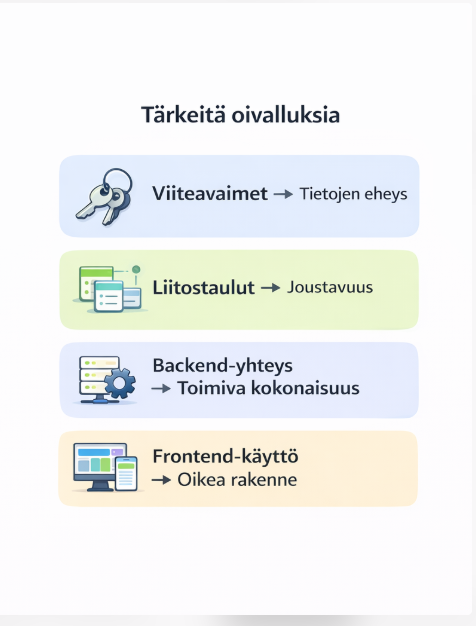
Oivallukset ja taidot
Mitä tekisin nyt toisin: Jos aloittaisin projektin uudelleen, panostaisin vielä enemmän
tietokannan rakenteen dokumentointiin heti alkuvaiheessa.
🧪
Testaaja
Lyhyt esittely:REKO-sovelluksen testaus jäi osittain rajalliseksi projektin aikataulun ja
resurssien vuoksi. Projektin alkuvaiheessa testaukselle ei ollut selkeää vastuuhenkilöä, minkä vuoksi
systemaattinen testaus jäi vähäiseksi. Projektin loppuvaiheessa otin testausvastuun vastaan muiden roolieni,
kuten frontend-kehityksen ja Figma-suunnittelun, ohella. Testausta toteutettiin yhteistyössä PO-roolissa
toimineen tiimin jäsenen kanssa, ja painopiste oli erityisesti frontendin toimivuuden varmistamisessa.
Testauksen kokonaiskuva→Testaus projektissa
Miten tein käytännössä: Käytännössä osallistuin sovelluksen testaamiseen yhdessä
PO-roolissa toimineen tiimiläisen kanssa. Toteutimme frontend-puolen testauksia, jotka keskittyivät
erityisesti saavutettavuuteen, käytettävyyteen ja yhteensopivuuteen eri selaimilla ja laitteilla. Testausta
tehtiin koko sovelluksen tasolla käyttäjän näkökulmasta.
Lisäksi toteutin Cypressillä end-to-end-testauksen, jossa testattiin neljä keskeistä käyttäjäpolkua
REKO-sovelluksessa. Näissä testattiin muun muassa ilmoitusten selaamista, tuotteiden valintaa ja ostoskorin
toimintaa. Yksikkötestauksen osalta toteutin yhden Vitestillä tehdyn testin, jossa haettiin ilmoituksia
fake-backendista ja varmistettiin datan oikea käsittely frontendissä.
Cypress E2E -testaus→Wave työkalu
Testausmenetelmät ja työkalut:Testauksessa hyödynnettiin useita
eri menetelmiä ja
työkaluja:
Manuaalinen testaus käyttäjän näkökulmasta
Saavutettavuus- ja käytettävyystestaus selaintyökaluilla
Yhteensopivuustestaus eri selaimilla
End-to-end-testaus Cypressillä (4 käyttäjäpolkua)
Yksikkötestaus Vitestillä fake-backendia vasten
Testauksen menetelmät→Testauksen työkalut
Yhteistyö ja vastuun jakautuminen: Testaus toteutettiin yhteistyössä tiimin kanssa,
erityisesti PO-roolissa toimineen jäsenen kanssa. Alkuvaiheessa testaus jäi vähälle huomiolle, koska sille
ei ollut nimettyä vastuuhenkilöä. Projektin loppupuolella otin testausroolin vastuulleni muiden tehtävieni
ohella, mikä vaikutti testauksen laajuuteen, mutta mahdollisti kuitenkin tärkeimpien käyttäjäpolkujen
testaamisen ennen projektin päättymistä.
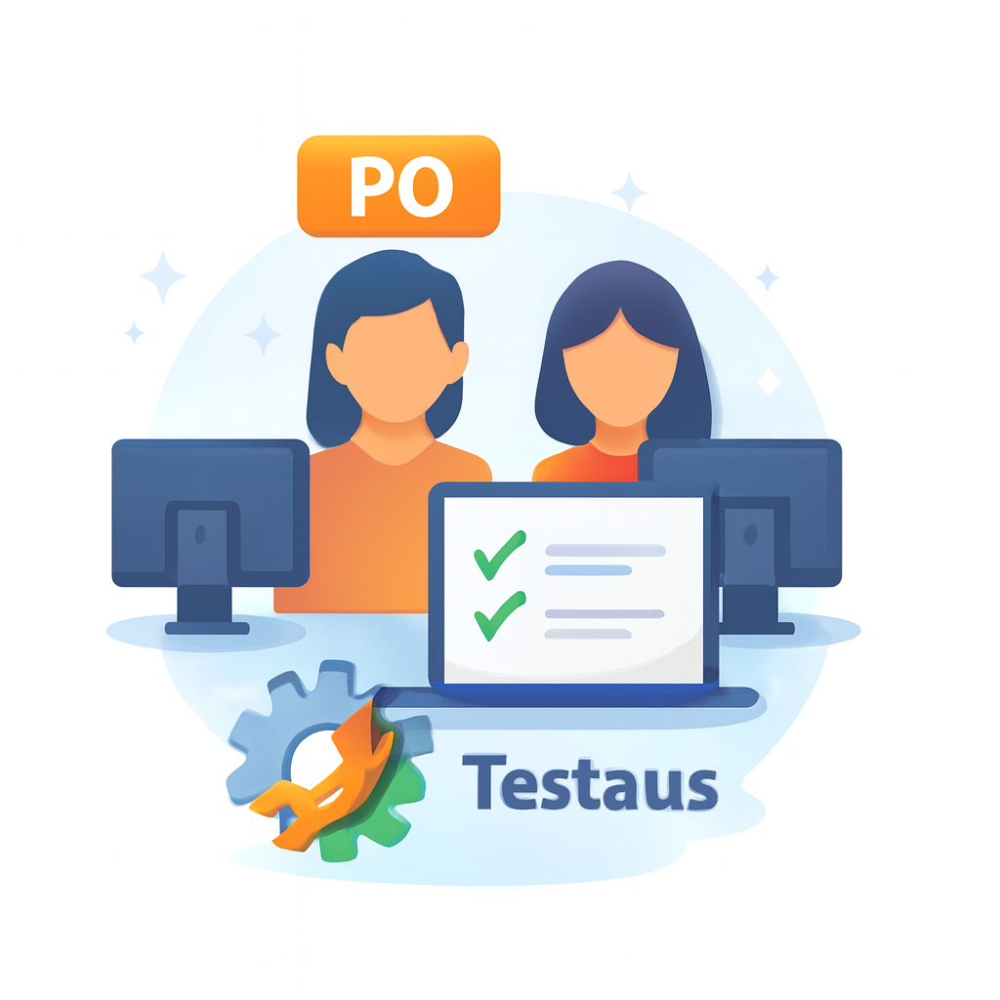
Yhteistyö PO kanssa→Iteratiivinen testaus
Mitä opin:
Opin, että testaus tulisi huomioida ja suunnitella jo projektin alkuvaiheessa
Ymmärsin, kuinka tärkeää on nimetä testaukselle selkeä vastuu
Opin tekemään Cypress-pohjaista end-to-end-testausta käyttäjäpolkujen kautta
Kehitin ymmärrystäni frontend-testauksen merkityksestä käytettävyyden ja saavutettavuuden
näkökulmasta.
Opin, että testauksen laajuus vaikuttaa suoraan sovelluksen luotettavuuteen.
Ennen testaus→Testauksen jälkeen
Mitä tekisin nyt toisin: Jos aloittaisin projektin uudelleen, varmistaisin, että testaus
otetaan mukaan jo projektin alkuvaiheessa ja että sille nimetään selkeä vastuuhenkilö. Jakaisin
testausvastuuta tasaisemmin tiimin kesken ja aloittaisin yksikkötestauksen aikaisemmin, jotta testaus tukisi
kehitystä koko projektin ajan eikä vain loppuvaiheessa.
Muu tekninen osaaminen TC aikana
☁️
Pilvi & integraatiot
Toteutin ratkaisun, jossa tuotteiden kuvat tallennettiin pilvipalveluun (S3), ja tietokantaan tallennettiin
vain viite kuvan sijaintiin. Lisäsin ja testasin tietoja paikallisesti MySQL Workbenchin avulla
SQL-kyselyillä, joilla kuvat liitettiin oikeisiin tuotteisiin.
Kuvien kulku S3 puketin→
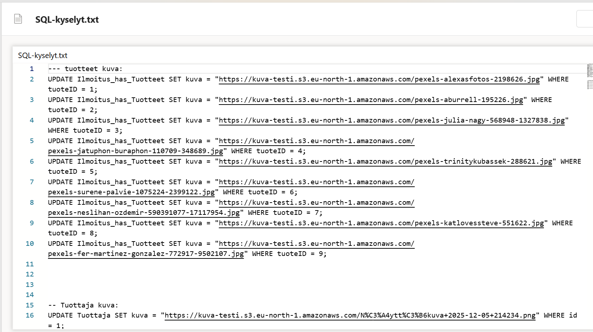
sql-kyselyt
🤝
Tiimityö ja kommunikointi
Olin aktiivinen tiimin sisäisessä kommunikaatiossa ja pyysin rohkeasti apua
tarvittaessa. Samalla autoin muita esimerkiksi Figma-suunnittelun ohjeistuksessa,
Gitin käytössä sekä liiketoiminnallisten ratkaisujen hahmottamisessa.
TiimityöFigma ohjeet
Reflektio
TC-projekti oli minulle merkittävä oppimiskokemus, joka selkeytti sekä omaa osaamistani että ammatillista
suuntaani ja myös auttoi minua ymmärtämään omaa osaamistani, vahvuuksiani ja suuntaani ohjelmistokehityksen
parissa.
Mitä osasin ennen TC:tä ja mitä osaan nyt
Ennen TC-projektia minulla oli perustiedot käyttöliittymäsuunnittelusta (Figma), frontend-kehityksestä,
tietokannoista ja testauksesta. TC:n aikana ja sen jälkeen osaamiseni näillä alueilla syveni merkittävästi.
Opin hyödyntämään eri osa-alueita yhdessä, ymmärtämään niiden roolia kokonaisessa sovelluksessa sekä
työskentelemään varmemmin käytännön projektissa osana tiimiä.
Mitkä tavoitteet toteutuivat ja mitkä eivät
TC-projektissa asettamani tavoitteet toteutuivat pääosin hyvin. Kehityin erityisesti
käyttöliittymäsuunnittelussa, frontend-kehityksessä sekä tiimityöskentelyssä. Lisäksi kehitin osaamistani
testauksessa, tietokantasuunnittelussa ja Gitin käytössä, jotka olivat myös alun perin omia tavoitteitani
projektin alussa.
Yksi henkilökohtainen tavoitteeni oli päästä kokeilemaan enemmän myös backend-kehitystä. Tämä ei kuitenkaan
toteutunut toivomallani tavalla, sillä minulla oli projektin aikana useita muita rooleja ja vastuualueita,
jotka veivät suurimman osan ajasta ja keskittymisestä.
Mitä opin projektin aikana suunnitelman ulkopuolelta ja yhteistyöstä
Projektin aikana opin paljon myös alkuperäisen suunnitelman ulkopuolisia asioita. Suurin oivallus oli se,
että kaikkea ei tarvitse osata heti valmiiksi. Opin kehittämään ratkaisuja vaiheittain ja parantamaan niitä
palautteen ja testauksen avulla. Ymmärsin myös, kuinka tärkeää on tehdä aluksi yksinkertainen versio ja
kehittää sitä iteratiivisesti eteenpäin sen sijaan, että yrittäisi tehdä kaiken täydelliseksi kerralla.
Samalla kehitin merkittävästi tiimityö- ja vuorovaikutustaitojani. Opin kommunikoimaan avoimemmin, pyytämään
rohkeasti apua ja tukemaan muita tiimin jäseniä aina kun siihen oli mahdollisuus. Autoin esimerkiksi
Figma-ohjeissa, Gitin käytössä sekä liiketoiminnan ymmärtämisessä, mikä vahvisti yhteistyötä ja teki
työskentelystä sujuvampaa koko tiimille.
Tulevaisuuden uratavoitteet ja osaamisen kehittäminen
Tulevaisuudessa haluan työskennellä frontend-kehityksen ja UI/UX-suunnittelun parissa. Olen erityisen
kiinnostunut myös tietokantasuunnittelusta ja haluaisin työskennellä rooleissa, joissa pääsen yhdistämään
näitä osa-alueita. Minua kiinnostavat erityisesti roolit, joissa pääsen tekemään käyttäjälähtöisiä
ratkaisuja ja kehittämään käyttöliittymiä, jotka ovat sekä visuaalisesti miellyttäviä että helppokäyttöisiä.
Haluan kehittää jatkossa backend-osaamistani,
tietokantojen syvempää ymmärrystä sekä
sovellusten kokonaisarkkitehtuurin hahmottamista.
Vahvuuteni
Vahvuuksiani ovat visuaalinen ajattelu, käyttöliittymien selkeys sekä kyky yhdistää suunnittelu ja tekninen
toteutus. TC-projektin aikana nämä vahvuudet selkeytyivät entisestään, ja huomasin pystyväni toimimaan
useassa roolissa tarpeen mukaan, erityisesti Figma-suunnittelun ja frontend-toteutuksen välistä yhteistyötä
sekä tietokannan ja frontendin välisen datan sujuvaa kulun varmistamista.
Miten TC tuki omia tavoitteitani
TC tarjosi mahdollisuuden oppia tekemällä
ja soveltaa teoriaa käytännössä oikeassa projektissa.
Se vahvisti varmuuttani omasta osaamisestani
ja työskentelystä osana tiimiä.
Miksi valitsin juuri nämä työt portfolioon
Valitsin portfolioon työt, jotka kuvaavat parhaiten omaa rooliani, oppimistani ja vahvuuksiani
frontend-kehityksessä ja käyttöliittymäsuunnittelussa. Lisäksi ne osoittavat, että tietokantasuunnittelu,
testaus, Gitin käyttö sekä tiimityöskentely sujuvat minulta ja että olen pystynyt soveltamaan näitä
osa-alueita käytännön projekteissa.
TC vahvisti suuntaani ohjelmistokehityksessä ja antoi varmuutta omasta osaamisestani osana tiimiä. Se
vahvisti myös motivaatiotani kehittyä edelleen frontend-kehittäjänä ja UI/UX-suunnittelijana.


 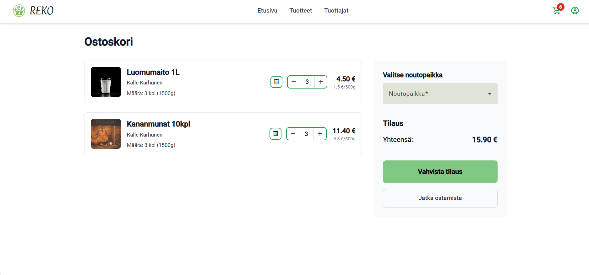
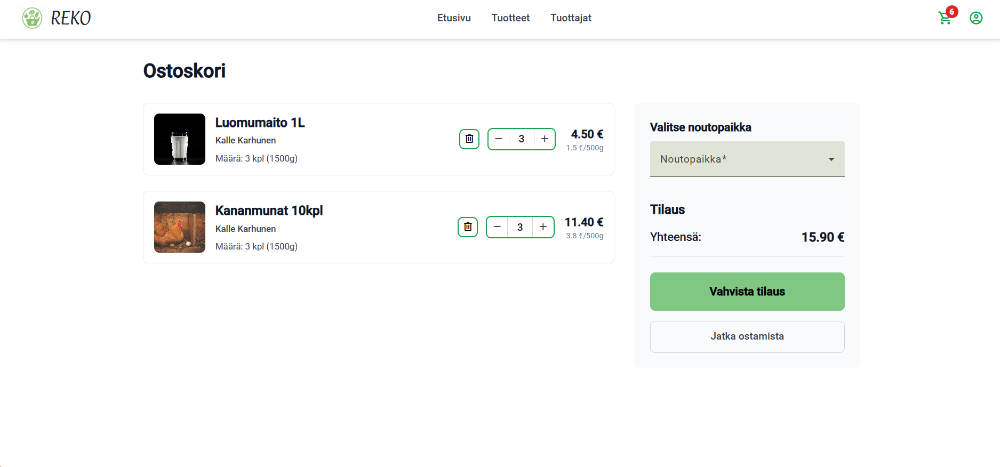
 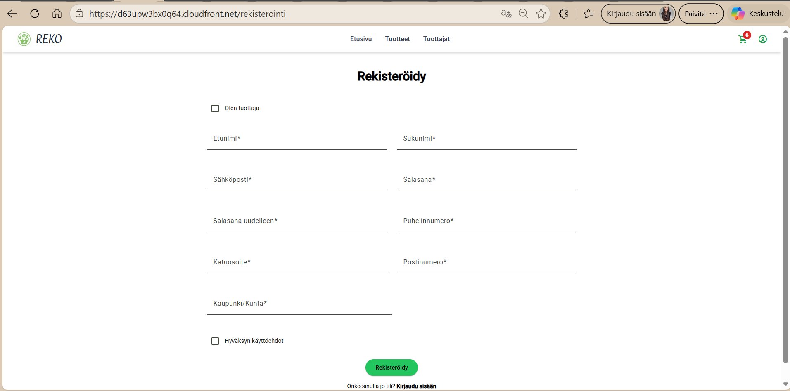
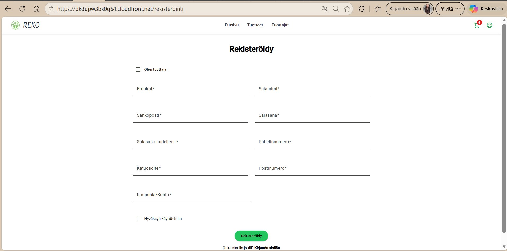